Week 4 · Day 17 — why old aspirin smells of vinegar
Organic Chemistry 1
About this lecture
Open an old bottle of aspirin and it often smells of vinegar. Aspirin is an ester. Moisture slowly splits it into salicylic acid and acetic acid, the acid in vinegar. Your body does the same kind of reaction thousands of times a second, and the proteins in your cells survive because amides do it very slowly.
Today we learn the reaction that links them:
The acyl family: acids, esters and amides share one carbonyl carbon
Addition, then elimination: a tetrahedral intermediate that can throw out a group
Ester hydrolysis in base: soap-making, step by step
Fischer esterification: how acid catalysis makes an ester, and why it’s an equilibrium
Amides: resonance, flat bonds, and why acid + amine gives a salt
Yesterday (Day 16) a nucleophile added to an aldehyde or ketone. Today the same first step has a second act.
The acyl family
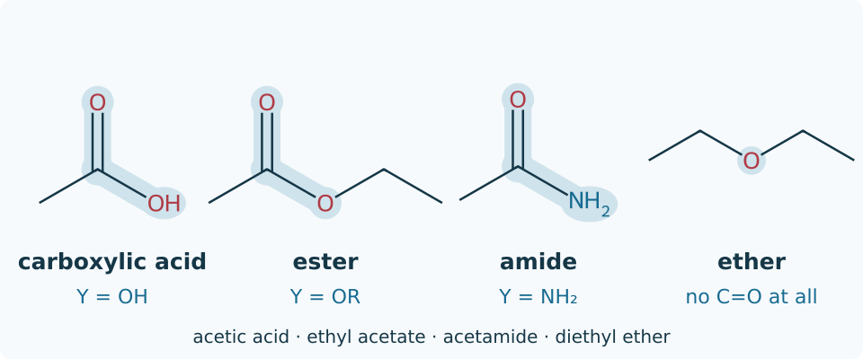
Acid, ester, amide and ether
An acyl carbon is a C=O carbon that also carries a heteroatom group Y. The Y on the carbonyl carbon names the family. An ether has O but no C=O, so no acyl carbon.
Try it: is HCOOCH₃ an aldehyde, an ether or an ester?
An ester (methyl methanoate), H–C(=O)–O–CH₃. The H on the acyl carbon doesn’t make it an aldehyde, because its other neighbour is OCH₃.
Step 1: the nucleophile adds
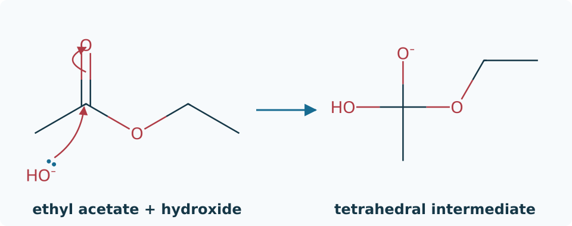
Hydroxide adds to ethyl acetate
Exactly as on Day 16: the hydroxide lone pair attacks the carbonyl carbon, and the C=O π pair moves onto oxygen. Carbon goes from planar to tetrahedral.
Try it: a student draws CH₃C(=O)(OH)OCH₃ as the intermediate. What’s wrong?
Five bonds to carbon (C–CH₃, C=O counts 2, C–OH, C–OCH₃). The π bond must open: the correct structure is CH₃C(O⁻)(OH)(OCH₃).
Track every oxygen
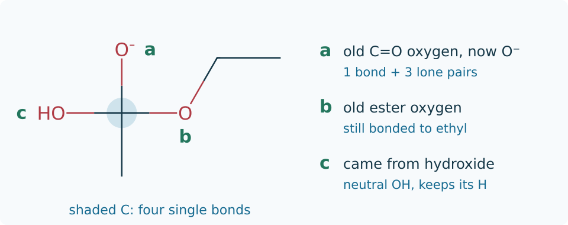
The tetrahedral intermediate with labelled oxygens
Label atoms and follow them, not positions on the page. The negative charge now sits on the old carbonyl oxygen, and the incoming OH is neutral. Oxygen b still carries the ethyl group: no bond to it has broken yet. Total charge: still −1.
Step 2: the carbonyl comes back and a group leaves
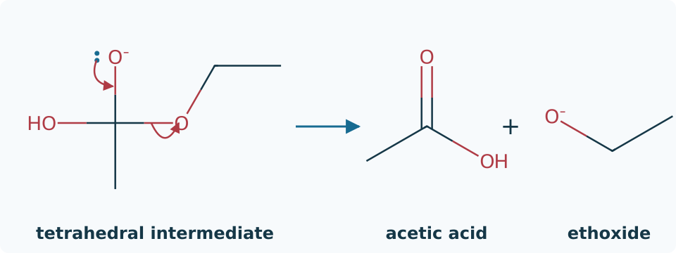
The tetrahedral intermediate collapses
The O⁻ lone pair pushes back down to reform C=O, and the C–OEt bond pair leaves with its oxygen as ethoxide. Addition followed by elimination gives net substitution: OEt has been swapped for OH.
The intermediate could also throw out the OH it just gained. That simply reverses step 1. What pushes the reaction forward comes in step 3.
What can leave decides what happens
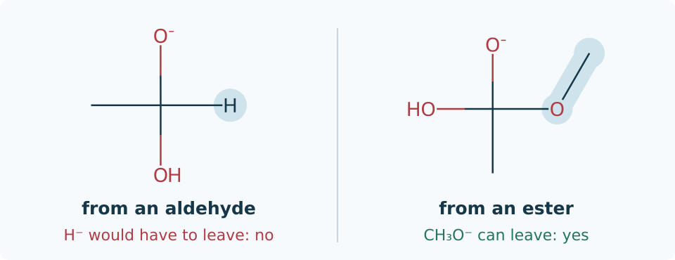
Tetrahedral intermediates from an aldehyde and from an ester
group that leaves
its conjugate acid
pKa
leaves?
Cl⁻
HCl
−7
very easily
CH₃COO⁻
CH₃COOH
4.8
easily
CH₃O⁻, HO⁻
CH₃OH, H₂O
15.5, 15.7
yes, in an addition–elimination
H⁻, CH₃⁻
H₂, CH₄
35, 50
no
Step 3: a proton transfer drives it
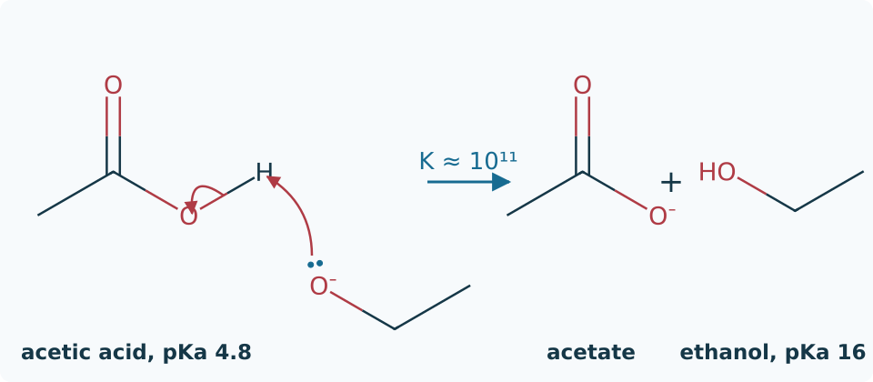
Ethoxide removes the proton from acetic acid
Acid and ethoxide can’t coexist in base. K ≈ 10^(pKa product acid − pKa reactant acid) = 10^(16 − 4.8) ≈ 10¹¹.
Try it: for methyl acetate the base is CH₃O⁻ (methanol pKa 15.5). Estimate K.
K ≈ 10^(15.5 − 4.8) = 10^10.7 ≈ 5 × 10¹⁰. Still hugely favourable, so carboxylate + alcohol is what you actually have.
Saponification: the net reaction and work-up
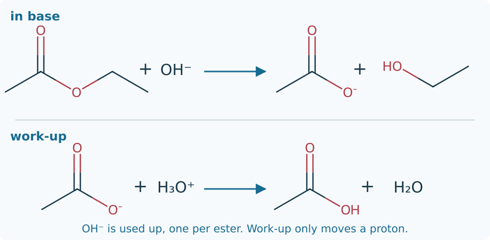
Ester hydrolysis in base, then acid work-up
Hydroxide is used up, one per ester, so it’s base-promoted, not base-catalysed. Boil a fat with NaOH and you get glycerol plus fatty-acid carboxylates: soap. To isolate the acid, add acid at the end (work-up).
Fischer esterification: acid activates the carbonyl
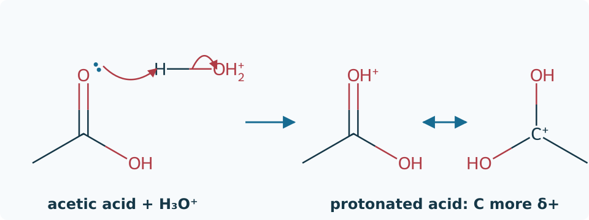
Hydronium protonates acetic acid
Ethanol is a neutral, weak nucleophile, and a base would just deprotonate the acid. So we make the carbonyl a better electrophile instead: protonate its oxygen.
The protonated O has three bonds and one lone pair, so it’s +1. The resonance form shows that charge shared onto carbon.
Ethanol adds
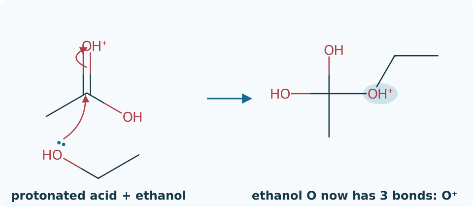
Ethanol adds to the protonated carbonyl
Two arrows, as always. The incoming ethanol oxygen now has three bonds, so it carries the + charge. The old carbonyl oxygen has become a neutral OH.
Try it: give the charge on each oxygen in CH₃C(OH)(OH)(O⁺HEt) and the total charge.
Old C=O oxygen: 0. Original acid OH: 0. Ethanol O: +1. Total +1, the same as the protonated acid plus neutral ethanol.
A proton shuffle makes a leaving group
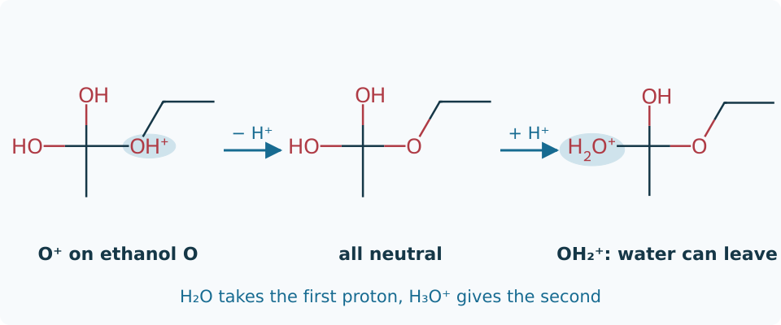
Proton transfers on the tetrahedral intermediate
Water removes the extra proton from the ethyl oxygen. Then H₃O⁺ protonates one of the OH groups to give OH₂⁺, which can leave as neutral water.
Try it: why not just let OH⁻ leave directly, as in base?
In acid there’s essentially no OH⁻ around, and it’s a poor leaving group compared with H₂O. Protonating first turns a bad leaving group into a good one.
Water leaves and the ester forms
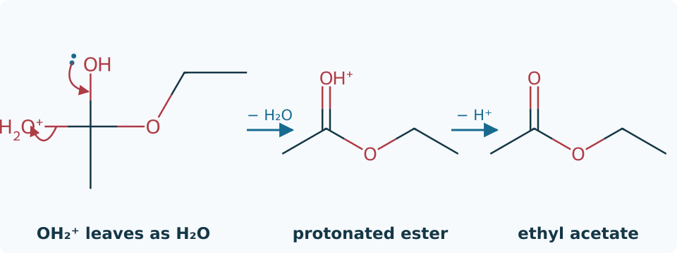
Loss of water and deprotonation give the ester
An OH lone pair reforms C=O and pushes out water, giving the protonated ester. Water takes that last proton, which regenerates H₃O⁺. The acid is a true catalyst.
An equilibrium, and an isotope check
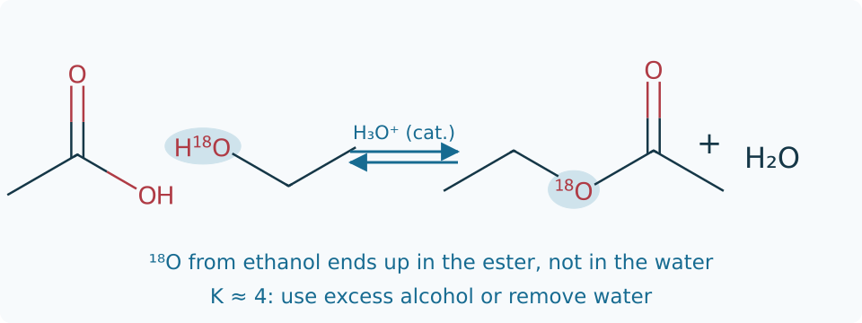
Fischer esterification as an equilibrium with labelled oxygen
K is only about 4: start with 1:1 acid and alcohol and you get about two-thirds ester. Excess alcohol or removing water pushes it further. The catalyst only gets you there faster.
Try it: you add more H₃O⁺ at the same temperature. Does K change?
No. A catalyst speeds up the forward and reverse reactions equally, so equilibrium is reached sooner but the composition is the same.
Amides are different: resonance
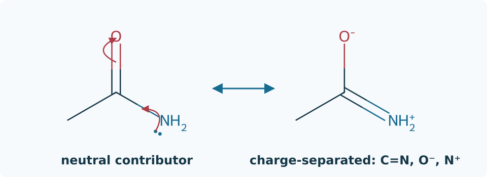
Amide resonance contributors
The nitrogen lone pair is shared with the carbonyl. The real amide is a blend: the C–N bond has partial double-bond character and the carbonyl is less electrophilic.
Try it: in the right-hand contributor, what are the charges on O and N, and the total?
O is −1, N is +1, total 0. N has four bonds and no lone pair. The double-headed arrow means one molecule, not an equilibrium.
Amide nitrogen is not an amine
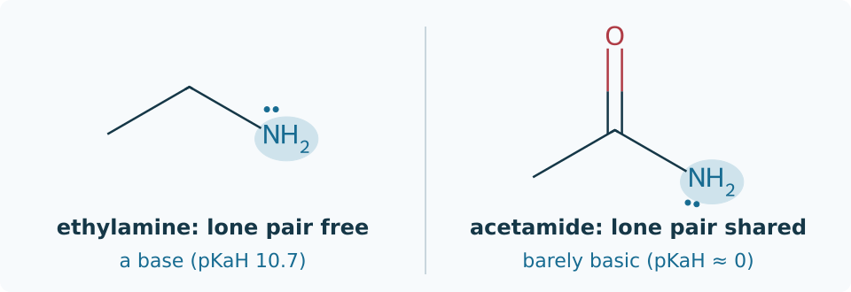
Ethylamine and acetamide compared
property
ethylamine
acetamide
N lone pair
free
shared with C=O
basic?
yes, pKaH 10.7
barely (pKaH ≈ 0, on O)
C–N rotation
free
restricted, the amide group is flat
Acid plus amine gives a salt, not an amide
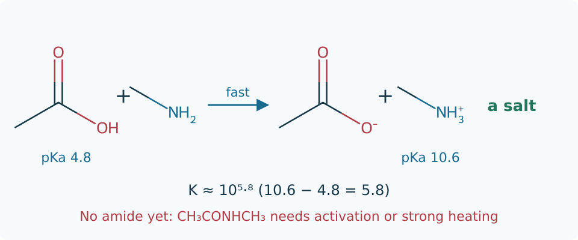
Acetic acid and methylamine transfer a proton
Mix an acid and an amine and the fastest thing is proton transfer. The carboxylate that forms is a poor electrophile, so no amide forms at room temperature.
Try it: use pKa 4.8 (CH₃COOH) and 10.6 (CH₃NH₃⁺) to estimate K.
K ≈ 10^(10.6 − 4.8) = 10^5.8 ≈ 6 × 10⁵. The salt is strongly favoured.
Esters and amides in biology
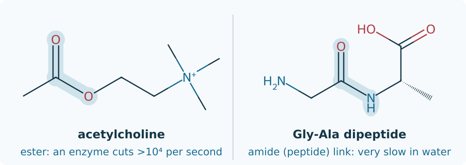
Acetylcholine and a dipeptide
Esters are built to be cut: acetylcholinesterase splits >10⁴ per second. Fats are glycerol esters.
Amides are built to last: a peptide bond survives for centuries in neutral water without a protease.
The ribosome makes amides from esters (aminoacyl-tRNA): downhill.
Back to aspirin
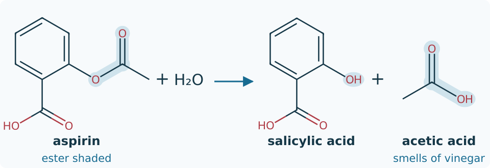
Aspirin hydrolysis
Aspirin’s acetyl ester is the reactive part. Water slowly hydrolyses it, which is why damp, old tablets smell of vinegar. The same acetyl group is what aspirin transfers to a serine in the COX enzyme, blocking it for good.
Try it: what would aspirin give with excess NaOH, before any work-up?
Acetate and the salicylate dianion. Saponification cuts the ester, then excess base removes the protons from both COOH groups and from the phenol OH.
Mistakes we see every year
mistake
fix
C=O kept while the nucleophile adds (five bonds to C)
move the π pair to O in the same step
calling an ether an ester because it has C–O–C
an ester needs the O on a C=O
“acid + ethoxide” as the final products in base
add the proton transfer: carboxylate + alcohol
OH⁻ drawn as catalyst in saponification
it’s used up, one per ester
OH⁻ or alkoxide drawn in an acid mechanism
protonate first, let water leave
a catalyst said to shift the equilibrium
it changes the rate, not K
resonance drawn with equilibrium arrows
use ↔︎: one molecule
acid + amine → amide in one step
first comes proton transfer to a salt
Summary
concept
key fact
acyl carbon
C=O carbon carrying Y = OH, OR, NR₂
addition–elimination
tetrahedral intermediate, then C=O reforms and Y leaves
leaving group
weaker base leaves better; H⁻ never leaves
saponification
ester + OH⁻ → carboxylate + alcohol; OH⁻ used up
work-up
H₃O⁺ turns carboxylate into acid; skeleton unchanged
Fischer esterification
acid-catalysed, K ≈ 4; water leaves as H₂O
amide resonance
partial C=N, flat, N not basic, least reactive
acid + amine
proton transfer to a salt first
Next: amines and aromatic rings, and why amine N is basic when amide N isn’t (Day 18). Practice:exercises · self-check